从编译C语言文件说起
1 | $ gcc -01 -o p p1.c p2.c |
使用了gcc命令来编译，也可以简单写作：cc。
优化层级为1，1级是最低的，层级越高程序优化越好，但增加了编译时间，也使调试变得更难，且跟源程序差异很大不便于理解。
编译的流程是：
- 预处理器（preprocessor）把诸如：
#include、#define、#if、#else、#elif、#ifdef、#endif等预编译指令替换掉。 - 编译器（compiler）把
.c源文件编译成.s的汇编代码文件。 - 汇编器（assembler）把汇编代码文件转换成相应的二进制目标文件
.o，目标文件已经是机器码了，只是没有填入全局变量的地址。 - 链接器（linker），把多目标文件和库函数链接在一起，形成可执行文件。
instruction set architecture，ISA，指令集体系结构，定义了处理器状态，指令的格式和行为。intel的指令集包括32位的：IA32，以及64位的：x86-64。
编译器做了整个编译流程的大部分工作，汇编代码几乎就是机器码的供人阅读版。所以看懂汇编代码是关键。
IA32程序代码和C语言很不相同，一些在C语言下看不到的处理器状态可以在这里看到：
- 程序计数器（program counter，PC，也叫：instructor pointer，IP）在IA32中叫：
%eip，指出下一条指令在内存中的位置 - 整数寄存器，可以用来保存数据
- 状态码寄存器，可以用来实现条件控制代码如：if和while
- 浮点寄存器，用来计算浮点数
例子
1 | int accum = 0; |
如果要看到编译出的汇编代码，可以使用-S选项：
1 | $ gcc -01 -S code.c |
这样就会使编译流程停留在 预处理->编译 阶段，而不是继续进行接下来的汇编和链接，生成的文件是：.s汇编文件。编译后的汇编代码中会包含如下代码：
1 | sum: |
这段代码中的每一句都对应一个机器指令，比如pushl这句的意思就是把寄存器%ebp的内容push到程序栈（内存中）上。在汇编代码里所有的局部变量都不见了，全局变量还可以看到，因为编译器还没有决定这个变量在内存中的存储位置。
如果我们使用-c选项，GCC就会既编译又汇编：
1 | $ gcc -01 -c code.c |
这样就生成了目标文件code.o，在800bytes的code.o文件中，有17bytes是对应上面的汇编代码的：
1 | 55 89 e5 8b 45 0c 03 45 08 01 05 00 00 00 00 5d c3 |
可以使用反汇编将难懂的目标文件代码转成汇编代码：
1 | $ objdump -d code.o |
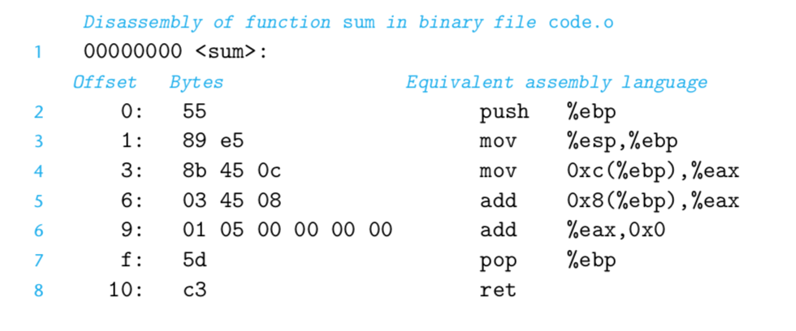
- IA32指令的长度是1到15字节，越常用的，操作数越少的指令越短，反之则越长。
- 给定一个开始的位置，只对应一种机器指令，比如只有
pushl %ebp指令是以55开头的 - 反汇编只需要根据目标文件就可以翻译出汇编文件
- 反汇编出来的文件跟直接编译的汇编文件有些不一样，比如所有指令都省略了后缀
l。l是大小指示符，而大多数情况下是可以省略l的。
头两个属性跟哈夫曼编码的原理是一致的，可以说这是一种通用的编码原则，第一条用来保证节省字节空间，第二条则保证编码的唯一性。
生成真正可执行的文件还需要链接操作，而且必须包含main函数。假设我们的main.c文件如下：
1 | int main(){ |
我们可以使用如下指令生成可执行文件：
1 | $ gcc -01 -o prog code.o main.c |
prog文件增长到了9123bytes，因为它不仅包含我们写的代码，而且包含了用来开始和结束的程序，以及与操作系统进行交互的程序。

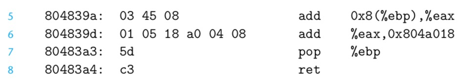
可以看到第6行，全局变量在链接的时候定址。
汇编代码的格式
假设我们有一个C语言文件simple.c：
1 | int simple(int *xp, int y) 2{ |
可以得到如下汇编代码：
1 | .file "simple.c" |
所有以.开头的行都是用来指导汇编器和链接器的，我们不用去管。而这段代码的大概意思如下：
1 | simple: |
这段代码对%ebp和%esp的操作涉及到了程序栈模型，看不懂很正常，文章下面会有讲解的。
ATT和intel汇编格式
ATT即AT&T，是贝尔实验室旗下的公司。
GCC和OBJDUMP默认生成ATT格式的汇编代码，微软和因特尔的编程工具则默认生成intel格式的汇编代码。
使用如下命令可以让GCC生成intel格式的代码：
1 | $ gcc -01 -S -masm=intel code.c |
两者的区别如下：
- intel代码省略了用来指定大小的后缀，比如使用
mov而不是movl - intel代码省略了寄存器前面的%，比如使用
esp而不是%esp - intel代码用了不同的方式来描述内存地址，比如使用
DWORD PTR [ebp+8]而不是8(%ebp) - intel代码多操作数指令的操作数顺序跟ATT相反
由于是由16bit架构扩展到32bit架构的，intel管16bit数据类型叫：word，32bit数据类型叫：double words，64bit数据类型叫：quad words。
数据格式
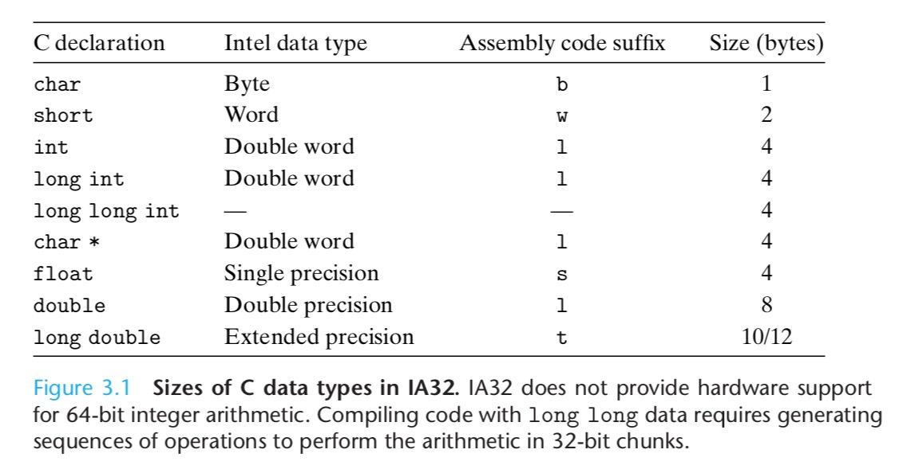
访问数据
IA32 CPU 包含了8个寄存器，每个有32bit存储空间，用来存储整形值以及指针。

x86-64则进一步扩展了这些寄存器：

前六个寄存器称为通用寄存器，有其特定的用途：
- %rax(%eax) 用于做累加，过程调用返回值
- %rcx(%ecx) 用于计数
- %rdx(%edx) 用于保存数据
- %rbx(%ebx) 用于做内存查找的基础地址
- %rsi(%esi) 用于保存源索引值
- %rdi(%edi) 用于保存目标索引值
操作数指示符
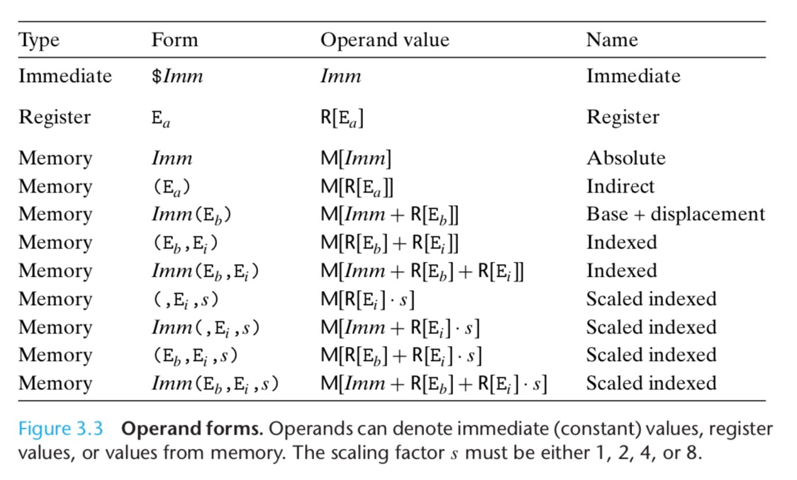
有三种类型的操作数，立即数(Imm)、寄存器值(Reg)、内存值(Mem)。
mov指令

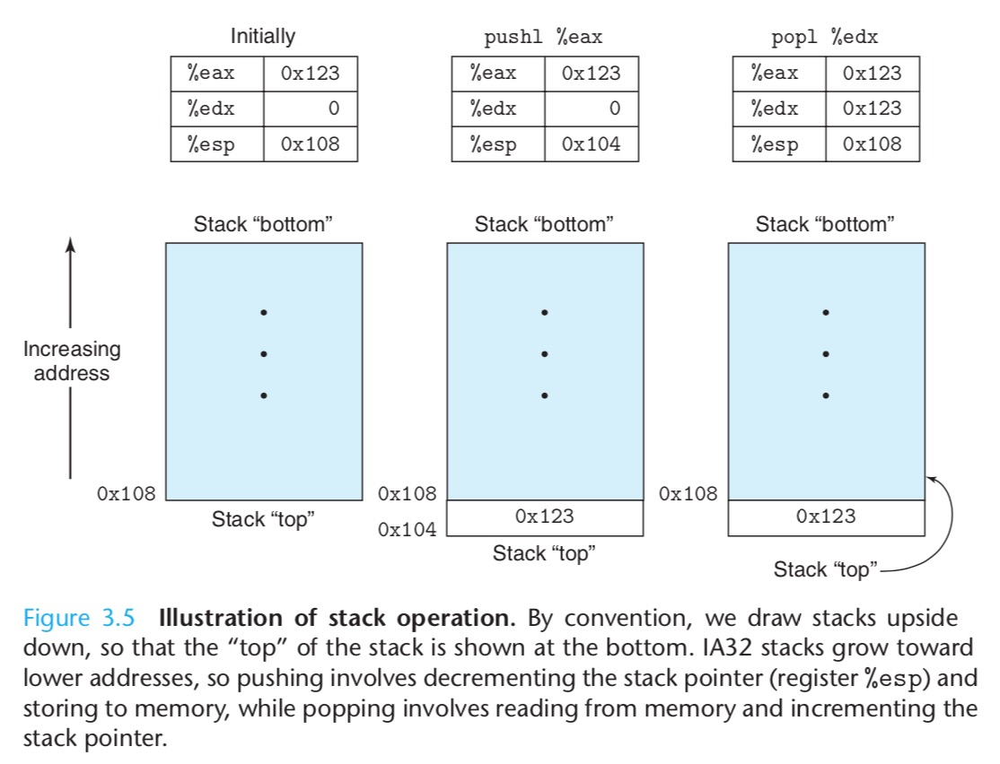
pushl %ebp指令等价于下面的指令：
1 | subl $4,%esp 减小栈指针 |
popl %eax指令等价于下面的指令：
1 | movl (%esp), %ebp 把%esp指向的内存地址中的值读到%eax中 |
算术和逻辑操作
load effective address，leal指令，实际上是一个movl指令。

多个操作数的指令，注意一下两个操作数的顺序即可
位移操作
位移的值是用一个单字节来表示，且数值只能是0到31，所以这个字节只有低五位才会被考虑。
扩展乘除指令

控制
状态码
使用单比特的状态码来描述算数和逻辑运算的状态。最常用的状态码如下：
- CF: carry flag 进位符，用来表示最高位的进位。通常用来检测无符号运算的溢出
- ZF: zero flag，零标志符，最近的操作产生了0
- SF: sign flag，符号位，最近的操作产生了负数
- OF: overflow flag，溢出符，补码溢出，正负都可以，表示有符号溢出

举个例子：t=a+b，a、b、t都是整形数。
1 | CF: (unsigned)t<(unsigned)a 无符号溢出 |
OF的表达式也可以写作：(a<0 && b<0 && t>0) || (a>0 && b>0 && t<0)，也就是说a、b都是负数相加却是正数，或者a、b都是正数相加却是负数，这两种情况就代表溢出了。
leal操作不会改变状态码，因为这个指令只是用来计算地址。除此之外表3.7中的所有操作都可能改变状态码。例如逻辑操作：XOR，会使CF和OF置零，移位操作会使CF置为最后一个移位出去的bit，但OF要置零。自增和自减指令会设置OF和ZF，不设置CF。
CMP指令类似于SUB指令，但只修改状态码而不改变其他寄存器，如果两个操作数相等，ZF就会被设置；TEST指令类似于AND指令，但只修改状态码而不改变其他寄存器，如果两个操作数是重复的： testl %eax,%eax，作用是检测%eax是0，还是正数，还是负数。
访问状态码
有三种常用的方式访问状态码：
- 根据几个状态码的逻辑组合，设置单个字节为0或1，也就是set指令
- 根据状态码，跳转到程序的其他分支
- 根据状态码传送数据

举个例子：计算a<b，a和b都是int型
1 | a is in %edx, b is in %eax |
setl 指令是：D <- SF^OF，也就是有两种情况代表 a-b<0：
- OF=0（a-b没有发生溢出），且SF=1（a-b结果为负）
- OF=1（a-b发生了溢出），且SF=0（a-b结果为非负）
第二种情况比较复杂，需要简单分析一下。a-b发生了溢出，有两种情况：正溢出和负溢出。负溢出：a是负数，b是正数，但a-b结果为正（结果小于了最小的负数，发生溢出）；正溢出：a是正数，b是负数，但a-b结果为负（结果大于了最大的正数，发生溢出）。
比如：
1 | -128： 1000 0000 |
a=-128, b=127, a-b=-128-127= $(1 0000 0001)_2$ , 从结果上来看就变成了1（正数），这就是负溢出
a=127, b=-127, a-b=127-(-127) = $(1111 1110)_2$ , 从结果上来看就变成了 -2（负数），这就是正溢出
OF=1, SF=0，就是负溢出，而负溢出代表着a是负数，b是正数，也就是a<b
其他三个有符号比较以此类推。
跳转指令

可以看到条件跳转必须是直接的，而无条件跳转可以使用操作数。
跳转位置的编码有两种：
- 借助PC使用相对定位
- 使用绝对定位
实例如下：
1 | jle .L2 if <=, goto dest2 |
目标文件和汇编文件对应如下：
1 | 8: 7e 0d jle 17 <silly+0x17> Target = dest2 |
对应的关系是：0xd+0xa=0x17，0xf3+0x17=0xa，为什么是加下一条指令的地址而不是当前指令呢？这个传统要追溯到计算机的早期实现，当时的处理器会在执行每一条指令之前先更新一下PC（program counter）。
1 | 804839c: 7e 0d jle 80483ab <silly+0x17> |
从反汇编代码来看，跳转如果使用PC相对地址，则不管代码存储到内存中的哪个位置，跳转的地址都不需要修改，且需要的编码更短。
翻译条件分支
1 | if(test-expr) |
先写成等价的goto版本，然后就可以很轻松的转成汇编了
1 | t=test-expr; |
从汇编的角度看 &&短路 原理：
1 | void cond(int a, int *p) |
1 | a %ebp +8, p at %ebp +12 |
可以看到第一个条件通不过的时候就跳过了第二个条件判断。
循环
do while
1 | do |
goto版本：
1 | loop: |
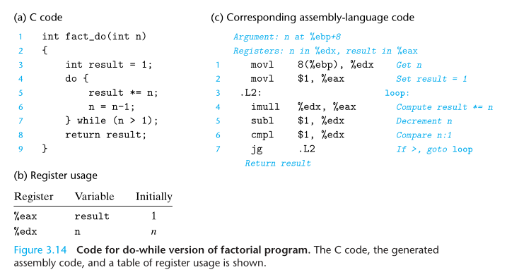
while
1 | while (test-expr) |
先转成do while形式：
1 | if (!test-expr) |
在把do while转成goto版：
1 | t = test-expr; |
for
1 | for (init-expr; test-expr; update-expr) |
先转成while形式：
1 | init-expr; |
然后转成do while形式：
1 | init-expr; |
最后转成do while的goto版本：
1 | init-expr; |
状态转移指令

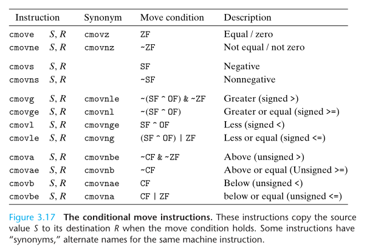
1 | v = test-expr ? then-expr : else-expr; |
goto版：
1 | if (!test-expr) |
switch
switch主要使用了跳转表：
1 | int switch_eg(int x, int n) { |
1 | int switch_eg_impl(int x, int n) { |
汇编代码如下：
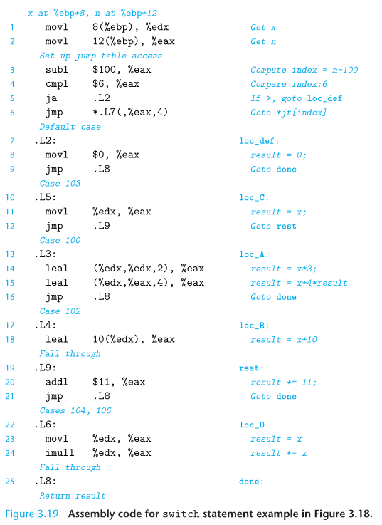
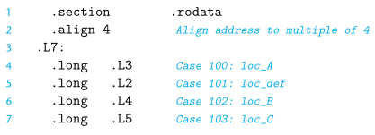
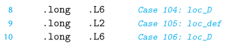
跳转表的步长是4
.rodata的意思是：read only data
过程调用
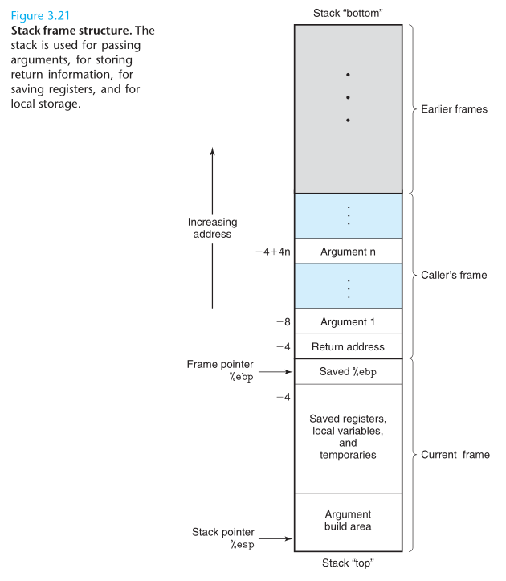
有以下几个要点：
- 栈是倒着长的
- 每个过程调用都有一个stack frame，栈帧
- 栈顶帧用两个指针来维护，一个是帧起址：%ebp，一个是栈指针：%esp指向栈顶。
%esp在过程运行的时候可能会被抹掉，这时候可以通过%ebp来定位。
可以看到返回地址在每一帧的最后。而每一帧的第一个位置存放着上一帧的帧起址%ebp。帧的中间则放置局部变量、过程参数等值。
有以下几种情况会将局部变量放到栈帧中：
- 局部变量多到寄存器放不下
- 局部变量是数组或者结构体，必须用到引用
- 局部变量使用了取址符
&，所以我们必须给它生成地址
转移控制
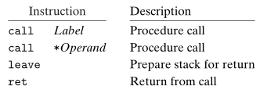
call指令的效果是：把返回地址push到栈中，然后跳到调用程序的地址（也就是把PC设置一下）。返回地址是汇编代码中call指令后面那条指令的地址。
ret指令把栈顶的返回地址pop出来，并跳转到这个地址。
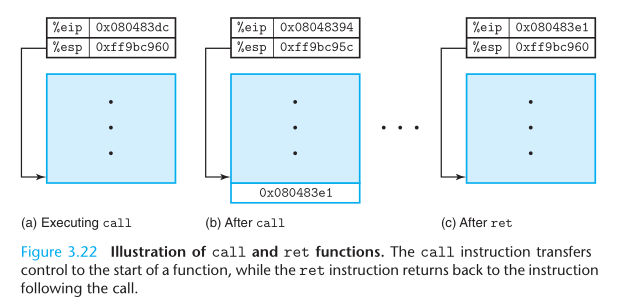
寄存器使用传统
%eax, %edx, %ecx是调用者保存寄存器。也就是说当过程Q被过程P调用，过程Q可以随意的写这三个寄存器，因为在调用Q之前P必须保存这三个寄存器的值。
%ebx, %esi, %edi是被调用者保存寄存器。也就是说在过程Q写这些寄存器之前，必须保存里面的值，并在return之前恢复原样。
过程调用例子
1 | int swap_add(int *xp, int *yp) |
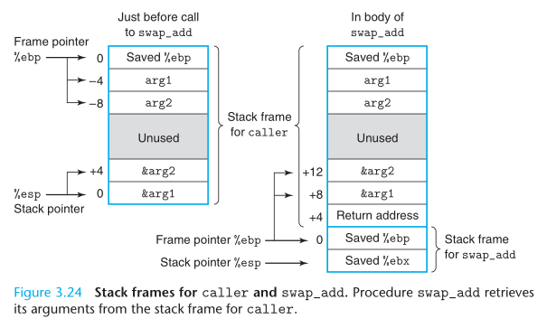
一些编程语言，比如Pascal，提供了值传参和引用传参。但C语言只有值传参，C++提供了引用传参。C语言可以通过指针来实现引用传参。
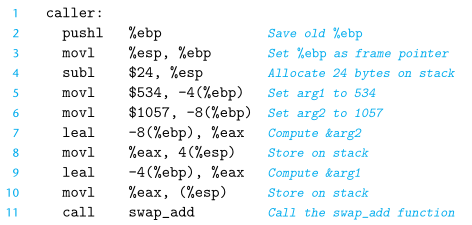
总共申请了24字节的空间，8字节用来存局部变量，8字节用来存参数，还有8字节未使用。
为什么要浪费8字节，原因是：内存对齐。GCC遵循一个x86编程方针：栈空间必须是16的整数倍，包括保存%ebp的4字节和返回地址的4字节。这里总共加起来是24字节，所以需要额外的8字节填充成32字节。
swap_add的汇编代码如下：
分为三个部分：setup、body、finish
setup:
1 | swap_add: |
首先要保存调用者的帧基指针，然后重新设置当前帧基指针，然后如果用到%ebx,%esi,%edi等寄存器就需要保存。
body:
1 | movl 8(%ebp), %edx Get xp |
获取参数，进行计算。
finish:
1 | popl %ebx Restore %ebx |
恢复两个寄存器，同时%esp回到了上一个帧的栈顶，指向了返回地址，然后ret指令就可以把PC置为返回地址了，这样就完成了控制权的转移。
然后执行调用完swap_add之后的代码：
1 | movl -4(%ebp), %edx |
leave指令的作用是重置栈指针和帧指针，也可以使用popl来重置，很简单：
1 | //使%esp指向%ebp的地址（也就是Saved %ebp那里） |
而之后的ret指令继续将Return Address pop出来，并将Return Address放到PC中。
从这个例子我们可以看出，编译器遵循一组简单的惯例来管理栈结构。
- 通过%ebp加偏移量（+8,+12,...）访问参数
- 通过push指令或者栈指针减偏移量来分配栈空间
- 在返回前恢复保存好的寄存器，并使栈指针指向调用者的返回地址（Return Address）
数组、多维数组、结构体、联合体这些都比较简单，这里略过。
要注意的点：只有call才会push一个返回地址，所以swap_add的栈帧中并没有返回地址，说明它没有调用其他函数
指针
每种数据类型都有对应的指针类型，但指针类型不是机器码的一部分，只是C语言提供的一种抽象，帮助程序员避免犯错。
内存引用越界和缓冲区溢出
我们可以看到C语言对数组引用没有任何边界检查，而且栈里面既保存了局部变量又保存了寄存器值以及返回地址。所以一旦数组越界写就会破坏整个程序的运行。
看下面这个例子：
1 | /* Sample implementation of library function gets() */ |
这段C语言代码对应的汇编代码如下：
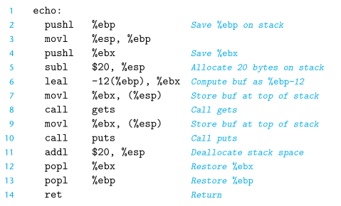
分配数组空间的时候是直接固定了8字节，这里给buf分配的空间也是8字节：leal -12(%ebp), %ebx，并把buf作为参数放置于栈顶。

我们可以看到，当读写buf[8]的时候，实际上是在读写Saved %ebx。
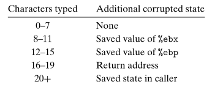
通常给被攻击的程序输入一个字符串，这个字符串包含了可执行代码的字节编码，如果我们通过缓冲区溢出修改了返回地址，那么ret指令就可以跳转到我们攻击代码的位置。
蠕虫（worms）和病毒（viruses）的区别：相同点：都可以复制和传播自身，不同点：蠕虫可以自己运行，病毒是把自己加入到其他程序中，包括操作系统代码，病毒是不能独立运行的。
对抗缓冲区溢出攻击的方法
栈随机化
攻击者需要插入攻击代码（一个字符串），并知道攻击代码的位置（也就是字符串存放的栈地址），而且指向这段字符串的指针也是这个字符串的一部分。如果栈的位置是固定的，那么就很容易猜到攻击代码的存放位置。用如下代码可以检测栈的位置：
1 | int main() { |
只需要打印一个局部变量的地址。
栈随机化的思想是程序每次运行时栈的位置都不一样，实现方式是：程序开始时，在栈上分配一段0~n字节之间的随机大小的空间，例如使用alloca可以在栈上分配空间。程序不使用这段空间，它的作用是使后续栈的位置发生变化。分配的n必须足够大，这样才能有足够多的变化，但又必须足够小，这样才不会浪费空间。
栈随机化是更大一类技术的一种，这类技术称为：Address-Space Layout Randomization，ASLR，地址空间布局随机化。但攻击者还是可以采取一定措施来增加攻击成功率，一种常见的手段就是在攻击代码前中插入很长一段的nop指令，这个指令只会使程序计数器（PC）加一，除此之外没有任何副作用。只要攻击者能够猜中这段序列中的某个地址，就可以顺利到达攻击代码。这个序列的常用术语是：nop sled空操作雪橇。
栈破坏检测
在局部缓冲区和栈状态之间插入一个随机的金丝雀值（也叫哨兵值），一旦发现这个值被改变，就说明缓冲区溢出了，那么就可以将程序异常中止。
攻击者只有输入局部缓冲区变量的权限，所以无从得知金丝雀值。
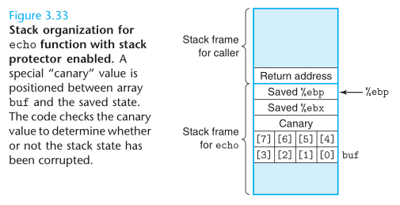
GCC默认就会插入金丝雀值，如果不想要可以使用参数：-fno-stack-protector来阻止GCC产生这种代码。当不使用此参数时，产生代码如下：
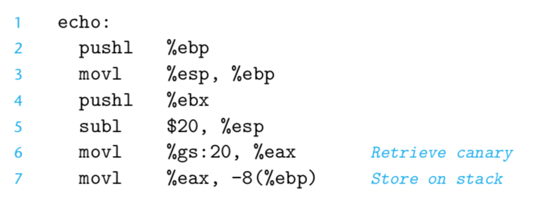

指令参数%gs20, %eax指明金丝雀值使用 segmented addressing（段寻址）从存储器中读入。将段标志为只读，这样攻击者就不能同时修改段中的金丝雀值。最后使用xorl比较段和栈中的金丝雀值，如果不相等则call __stack_chk_fail。
这种做法可以带来很小的性能损失。
限制可执行代码区域
在典型的程序中，只有保存编译器产生的代码的那一部分存储空间才需要是可执行的。其他部分可以被限制为只允许读写。虚拟存储器空间在逻辑上分成了页（page），典型的每页是 2048 或者 4096 字节。由硬件提供存储器保护。以前，x86体系结构将读和执行访问控制合并成一个1位标志，所以任何被标记为可读的部分也是可执行的，当然也有很多机制可以限制一些页是可读的但是不可执行，然而这些机制都很消耗性能。最近，AMD（Advanced Micro Devices）为它的64位处理器的内存加入了 NX, No-eXecute，不可执行位，intel也跟进了，检查页是否可执行由硬件来完成，效率上没有任何损失。